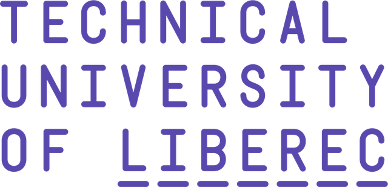
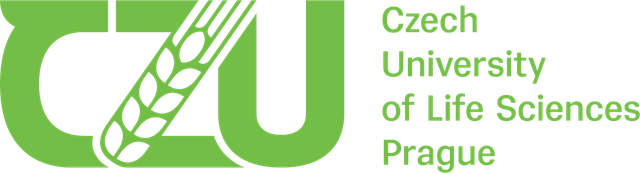
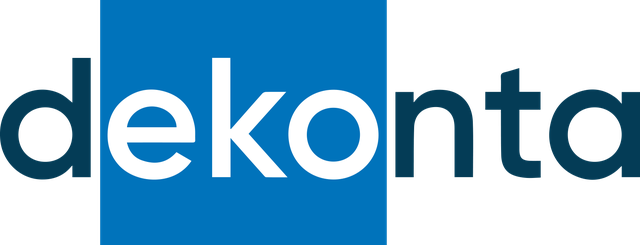
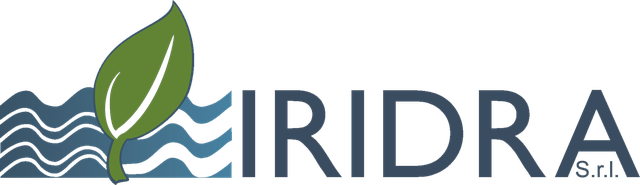
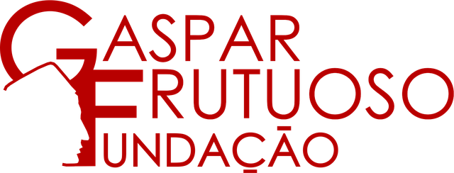

V potocích a jezerech se přemnoží řasy
Dusík a fosfor způsobují eutrofizaci: řasy bují, ve vodě ubývá kyslíku a vodní ekosystémy se zhoršují.
LIFE4FARMS využívá technologii Wet4Agro a umělé mokřady k čištění odpadních vod z chovu hospodářských zvířat.
Vaše farma funguje už dnes.
Zvládne ale hospodaření s vodou i zítřejší nároky?
Dusík a fosfor způsobují eutrofizaci: řasy bují, ve vodě ubývá kyslíku a vodní ekosystémy se zhoršují.
Zbytky veterinárních léčiv, patogeny i geny antimikrobiální rezistence se mohou dostat do půdy, povrchových i podzemních vod. Právě takové vody chrání systémy na demonstračních farmách – Brejský potok, jezero Furnas i pobřežní vody Azor.
Dostupnost vody, provozní náklady i environmentální očekávání se mění. Systém, který vyhovuje dnešním potřebám, může narazit na nové výzvy, ať už farma roste, mění se klimatické podmínky, nebo je těžší se k vodě dostat.
Stávající tradiční technologie jsou drahé na stavbu i provoz a neřeší veškeré znečištění.
Dnes alemáme volbu.
Voda projde mokřadem a vyčistí ji příroda.
Wet4Agro vzniká proto, aby farmám pomáhal udržitelněji nakládat s odpadními vodami, snižovat znečištění a hledat možnosti opětovného využití vody.
Mechanické předčištění zachytí nerozpuštěné látky. Mokřad se tak neucpe a vydrží desítky let.
Ve vertikálním mokřadu probíhá nahoře nitrifikace a rozklad organických látek, níž, bez kyslíku, denitrifikace.
Dřevní štěpka, pemza, keramické střepy a štěrk zachytí a přemění dusík, fosfor i rezidua léčiv.
Průtok, pH, kyslík a teplota online. Vyčištěnou vodu lze znovu využít, třeba k zavlažování.
Zjistěte, zda by pro váš provoz mohl být vhodný přírodní systém čištění.
Kontaktujte nás →Wet4Agro se ověřuje v plném provozu v Česku a na Azorech, u skotu i prasat.
Střední Čechy · chov skotu
Ostrov São Miguel, Portugalsko
Ostrov São Miguel, Portugalsko
odstranění dusíku
odstranění léčiv
vyčištěné vody ročně
nových mokřadních biotopů
Data ověřujeme na třech demonstračních farmách – naměřené výsledky budeme průběžně doplňovat.
Mezinárodní tým univerzit, výzkumných institucí a firem z Česka, Portugalska, Dánska a Itálie. Projekt je spolufinancován z programu EU LIFE.

Koordinátor projektu a hlavní řešitel; akreditované laboratoře pro analýzu vod, správa dat, dlouhodobý monitoring.
tul.cz ↗
Návrh mokřadů, provoz systému, posuzování životního cyklu.
czu.cz ↗
Příprava a realizace lokalit, vzorkování a chemické analýzy (P1), replikace.
dekonta.cz ↗ DánskoMokřadní systémy, biodiverzita, LCA, replikace a komunikace.
au.dk ↗
Přírodě blízká řešení, replikace a transfer technologií.
iridra.eu ↗
Realizace a monitoring lokalit na Azorech (P2 a P3).
fgf.uac.pt ↗ PortugalskoZemědělský provoz a komerční perspektiva.
financor.pt ↗Výstavba lokalit na Azorech (P2 a P3).
Záleží na objemu vody, cílových látkách a požadované účinnosti. Umělé mokřady obvykle zabírají přibližně 0,5–5 % plochy přispívajícího povodí; běžné systémy mají od 100 do několika tisíc m².
Obecně velmi nízké: mokřady potřebují málo energie, žádné složité strojní zařízení a jen omezenou údržbu (kontroly, péče o vegetaci, odstraňování kalu z předčištění).
Ano. Při nižších teplotách může účinnost klesnout, protože se zpomalí mikroorganismy, ale dobře navržené systémy čistí spolehlivě celý rok.
Média obvykle vydrží několik desetiletí. Klíčové je důkladné mechanické předčištění; výměna je nutná jen při výrazném ucpání nebo poškození.
Ano, pokud splňuje místní nebo evropské standardy (např. nařízení (EU) 2020/741): k zavlažování, čištění provozů a jiným účelům, kde není potřeba pitná voda.
Dobře navržený a udržovaný mokřad zapáchá minimálně, nebo vůbec. Přetrvávající zápach signalizuje přetížení nebo provozní problém.
Ano. Umělé mokřady jsou vhodné zejména pro malé a středně velké farmy díky snadnému provozu a nízkým nákladům.
Závisí na národních a místních předpisech. Většinou je nutné povolení stavby a vypouštění nebo opětovného využití vod.
Dobře navržený umělý mokřad může fungovat 20–40 let i déle; pomáhá pravidelná údržba.
Máte zájem o další informace nebo spolupráci? Napište nám a my se vám ozveme.
Technická univerzita v Liberci, Česká republika